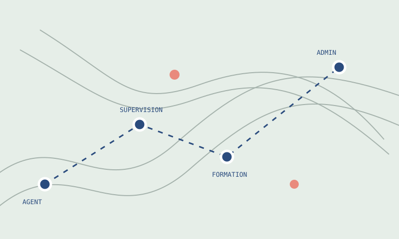
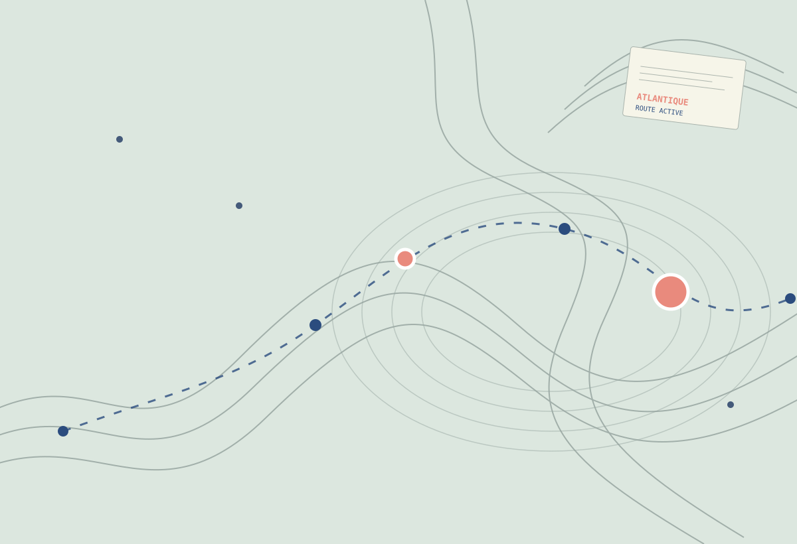
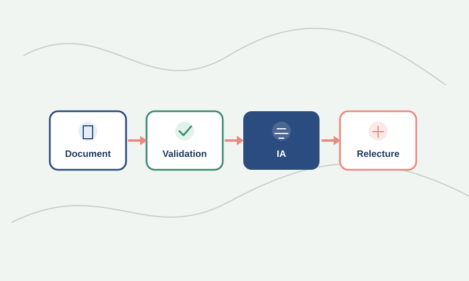

Du travail réel à une lecture partagée de l’activité.
Les rôles Agent, Superviseur, Formateur et Admin s’appuient sur un même référentiel sans mélanger leurs responsabilités.
Suivez le travail réel, partagez les bonnes procédures et transformez la connaissance validée en compétences mesurables.

Task’in relie les activités quotidiennes à des repères concrets : objectifs, documentation, supervision et apprentissage.

Les rôles Agent, Superviseur, Formateur et Admin s’appuient sur un même référentiel sans mélanger leurs responsabilités.

La plateforme est fonctionnelle côté interface ; la mise en production nécessite la validation des règles Firestore et des endpoints sécurisés.
Les dashboards Admin et Superviseur restent lisibles en thème clair comme en thème sombre, avec des indicateurs issus du suivi de l’activité.
Volume, durée, agents actifs, DMT, FRT, respect du SLA et répartition des traitements se rencontrent dans une même vue de décision.
Le contrat formalise le parcours d’un document validé vers une proposition de formation. Il rend explicites les formats attendus, les collections touchées et les règles de sécurité à respecter.
Chaque espace a sa fonction propre, mais partage un même objectif : faire circuler une information claire, actionnable et sécurisée.
Un panneau intégré et un widget flottant permettent de démarrer un timer, consulter les procédures et créer un cas complexe sans quitter les outils métier.